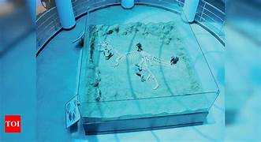

Beauty of Ariyalur
MUSEUM

A museum is an institution dedicated to displaying and/or preserving culturally or scientifically significant objects. Many museums have exhibitions of these objects on public display, and some have private collections that are used by researchers and specialists. Museums host a much wider range of objects than a library, and usually focus on a specific theme, such as the arts, science, natural history or local history. Public museums that host exhibitions and interactive demonstrations are often tourist attractions, and many attract large numbers of visitors from outside their host country, with the most visited museums in the world attracting millions of visitors annually.
Since the establishment of the earliest known museum in ancient times, museums have been associated with academia and the preservation of rare items. Museums originated as private collections of interesting items, and not until much later did the emphasis on educating the public take root.